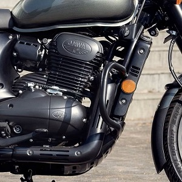
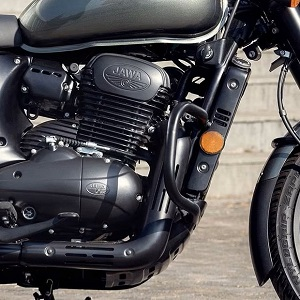

The Jawa Perak is a powerful and iconic motorcycle that traces its roots back to the 1940s when the original Jawa brand was established in Czechoslovakia. With a rich heritage of craftsmanship and innovation, Jawa motorcycles quickly gained recognition for their exceptional performance, reliability, and distinctive design.
The Perak model holds a special place in Jawa's history. It was first introduced in the late 1940s as a flagship motorcycle, renowned for its superior engineering and extraordinary capabilities. The name "Perak" is derived from the Malay word for "silver," signifying its exceptional quality and status. Over the years, the Jawa Perak has evolved and continued to captivate riders with its timeless appeal.
Underneath its striking exterior, the Jawa Perak packs a punch with its robust engine performance. It is equipped with a powerful and refined liquid-cooled 334cc engine, delivering an exhilarating riding experience that effortlessly combines power, agility, and smoothness. Beyond its exceptional performance, the Jawa Perak exudes craftsmanship and attention to detail. Every component, from the finely-tuned exhaust to the meticulously crafted bodywork, showcases the brand's commitment to excellence and dedication to creating motorcycles that are both aesthetically pleasing and built to last.


 
